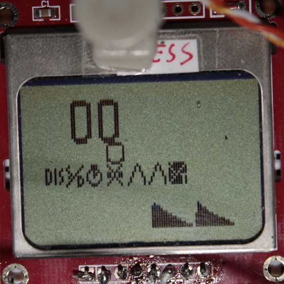

jazda
a DIY bicycle computer
Jazda is a project aimed to create a hackable bicycle computer from widely-available parts.

Features
- Current speed
- Trip distance
- Trip average speed
- Trip max speed
- Trip time
- Speed vs distance plot
- Speed vs time plot
Technical highlights
- Open schematics & PCB design
- AVR architecture
- Low operating voltage (3V)
- Written in C
- Fast interrupt-driven code
- Fixed-point arithmetics with configurable precision
- Vector digit rendering
- Modular design
Contact
rhn (gihu.rhn@porcupinefactory.org)
Download
You can download this project in either
zip or
tar formats.
You can also clone the project with Git
by running:
$ git clone git://github.com/rhn/jazda